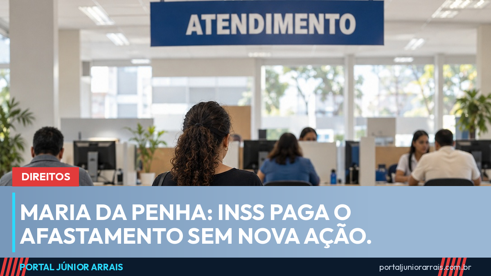

Violência doméstica: INSS passa a pagar afastamento do trabalho sem precisar de nova ação

A mulher vítima de violência doméstica que for afastada do trabalho por ordem judicial, como medida protetiva da Lei Maria da Penha, passa a receber o pagamento do INSS sem precisar entrar com outra ação na Justiça. A mudança veio com um parecer vinculante da Advocacia-Geral da União (AGU), assinado pelo presidente da República na quinta-feira, 1º de outubro.
Em agosto, o portal mostrou que a mulher pode se afastar do trabalho por até seis meses e o INSS paga o período. O que faltava era transformar essa regra em obrigação para o próprio INSS, e é isso que o parecer faz.
O que o STF já tinha decidido
A Lei Maria da Penha (Lei 11.340/2006) permite ao juiz afastar a mulher do local de trabalho por até seis meses, mantendo o emprego. A lei, porém, não dizia quem pagaria o salário nesse período. Em junho de 2026, o Supremo Tribunal Federal resolveu a dúvida no Tema 1.370 da repercussão geral (RE 1.520.468):
- Trabalhadora com carteira assinada: o empregador paga os 15 primeiros dias, e o INSS paga o restante;
- Contribuinte individual, facultativa ou segurada especial: o INSS paga o período inteiro;
- Mulher que não contribui para o INSS: o pagamento tem natureza assistencial e fica com o estado, o Distrito Federal ou o município indicado pelo juiz.
Não há carência, ou seja, não se exige um número mínimo de contribuições. Também não há desconto de contribuição sobre o valor, e o período conta como tempo para a aposentadoria.
O que muda com o parecer
A decisão do Supremo obrigava juízes e tribunais, mas não a administração. Sem uma orientação oficial, cada mulher corria o risco de ter de abrir um novo processo para receber. Com o parecer vinculante, todos os órgãos federais, incluindo o INSS, passam a seguir a tese. Basta a decisão do juiz que determinou o afastamento: o INSS confere apenas se a mulher tem qualidade de segurada, sem nova perícia e sem rediscutir a necessidade da medida.
O Ministério da Previdência e o INSS têm 15 dias a partir da publicação do parecer para regulamentar o pagamento, com atendimento prioritário e sigiloso. O INSS também poderá cobrar depois, na Justiça, os valores pagos de volta do agressor.
Em caso de perigo
Em situação de risco imediato, o caminho é ligar para o 190. Para orientação, denúncia e informação sobre a rede de proteção, a Central de Atendimento à Mulher atende pelo 180, a qualquer hora.
Cuidado com golpe
Novidade sobre benefício costuma vir acompanhada de mensagem falsa. Ninguém precisa pagar taxa para "liberar o auxílio da Maria da Penha", e nenhum órgão pede Pix, senha ou foto de documento por aplicativo de mensagem. Desconfie de quem promete adiantar o pagamento em troca de dinheiro.
Cada caso tem detalhes próprios, como o tipo de vínculo de trabalho e a situação perante a Previdência. Para entender como a regra se aplica à sua situação e reunir a documentação, procure um profissional de sua confiança.
Conteúdo informativo — não substitui orientação individualizada sobre o seu caso.
Júnior Arrais · Editor do Portal Júnior Arrais
Comunicador de Ubá (MG). Escreve todos os dias sobre benefícios sociais, INSS, trabalho e economia do dia a dia, a partir do Diário Oficial, de portarias e de fontes oficiais, em linguagem simples. Conheça a linha editorial e a política de correções do portal.